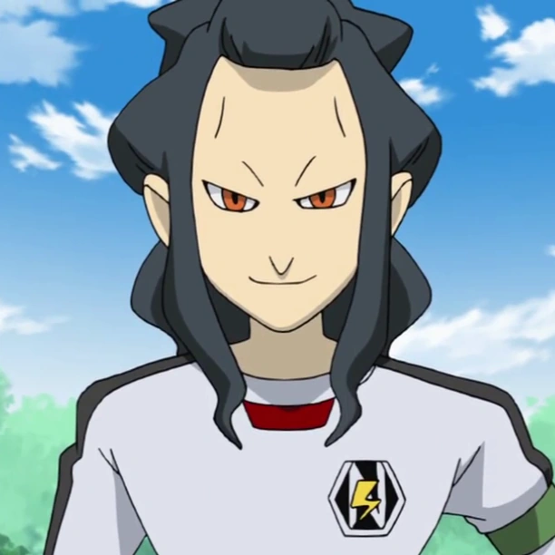

Dvalin / Desarm
- Version
- dvalin:epsilon-ie2
- Canonical ID
- dvalin
- Team/Game
- epsilon / ie2
- Target status
- ASSET-VERIFIED
- Source reference
- File:(E) Desarm sprite.png
- Source filename
- (E) Desarm sprite.png
- Suitability
- GAME-SPRITE
- Resolution
- 64×64
- Format
- PNG
- Candidate SHA
- 47041533a126fd6d8fd14b0d2f0860a11c04407c7ae8639d89bf09dcf0bbf413
- Match
- MATCHED
- Status
- ASSET-VERIFIED

- Source reference
- Saginuma_Osamu
- Source filename
- Saginuma_Osamu.png
- Suitability
- GENERIC-CHARACTER-IMAGE
- Resolution
- 612×612
- Format
- PNG
- Candidate SHA
- e4c1eafb4235691bc28ca872eed2177f2632db8068cc487a3e57caf6ef50633c
- Match
- MATCHED
- Status
- REVIEW